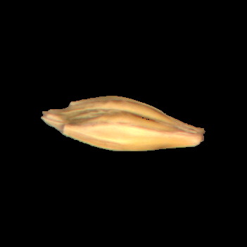

Seed Species Classification — Barley
Automated barley seed identification using image segmentation, feature engineering, and classical ML.

Project Overview
This project builds a reliable pipeline for automated classification of barley seed species from raw images. The core objective was to transform raw CR2-format images containing multiple seeds into a clean, feature-rich dataset and train multiple classification models to achieve robust recognition suitable for agricultural quality control and research.
Challenge & Motivation
Manual seed classification is time-consuming, subjective, and costly. The dataset consisted of high-resolution raw images with multiple seeds per frame and no pre-applied labels. The challenge required robust segmentation, precise feature extraction, and model comparison that balances accuracy, interpretability, and computational efficiency.
End-to-End Methodology
1. Data Ingestion & Preprocessing
- Converted CR2 files into actionable image formats and standardized resolution/lighting where necessary.
- Applied background reduction and normalization to improve segmentation consistency.
2. Segmentation & Instance Extraction
- Used color-thresholding, morphological operations, and contour detection to isolate each seed.
- Saved each detected seed as a separate sample for downstream feature extraction.
3. Feature Engineering
- Shape features: aspect ratio, roundness, compactness, eccentricity, area, perimeter.
- Texture descriptors: LBP (Local Binary Patterns), Haralick features (GLCM).
- Color descriptors: RGB/histogram statistics, normalized color ratios.
4. Models Implemented & Compared
- Artificial Neural Network (ANN) — handled nonlinear relationships; useful with more data and augmentation.
- Random Forest — strong baseline with good interpretability and feature importance diagnostics.
- Support Vector Machine (SVM) — effective for smaller, high-dimensional feature sets.
- Logistic Regression — lightweight baseline to measure incremental gains.
- Extra Trees (Extreme Randomized Trees) — fast ensemble variant offering robustness against noise.
Evaluation Strategy
Data was split into training and test sets. Evaluation included accuracy, precision/recall, F1-score, and confusion matrices. Cross-validation and hyperparameter tuning (grid/random search) were applied where appropriate to ensure robust comparison.
Key Findings
- SVM and Random Forest emerged as the most consistent performers on the engineered feature set, offering a balance between accuracy and robustness.
- ANN showed promise for deeper feature learning but required more data/augmentation and careful hyperparameter tuning to outperform classical models.
- Segmentation quality directly influenced classification performance — careful morphological post-processing improved downstream accuracy significantly.
Project Impact & Use Cases
This pipeline can be integrated into seed testing labs and agricultural supply chains to:
- Automate seed purity and species verification procedures.
- Accelerate research workflows for plant breeders and agronomists.
- Reduce human error and operational costs for routine quality checks.
Tech Stack & Tools
Next Steps / Roadmap
- Expand dataset (more species, varied imaging conditions) and apply augmentation for ANN/CNN training.
- Implement transfer learning with CNN backbones for direct image-based classification (reduce manual feature engineering).
- Build a lightweight deployment (Streamlit/Flask) for live inference and QA workflows.
- Add active learning loops to iteratively improve labeling quality with user-in-the-loop corrections.
Reflection
Working with raw, multi-seed CR2 images sharpened my skills in practical data engineering and computer vision. The project reinforced that careful preprocessing and domain-aware feature engineering often matter more than model complexity, especially with limited labeled data. My approach prioritized reproducible pipelines, clear evaluation, and model interpretability — qualities I bring to professional AI engineering roles.